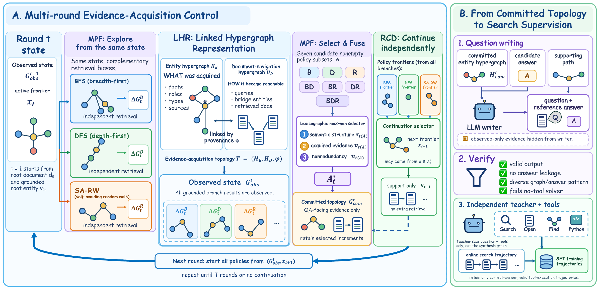

Multi-hop is not multi-retrieval
Several semantic clues can coexist on one page and require only one lookup.
Search-agent data synthesis
Controlling Evidence Acquisition Before Writing Questions for Search Agents
ACTS constructs how evidence becomes reachable before asking a model to write the question, turning realized acquisition into a controllable source of search supervision.
Abstract
Search-agent training data must teach a model not only to reason over retrieved facts, but also to discover them through tools. Yet a synthetic question can appear multi-hop while collapsing to a single page, and a larger evidence graph can add redundancy without requiring new retrieval. This mismatch creates a search-demand gap between apparent complexity and realized acquisition.
ACTS designs a task's evidence-acquisition topology before question writing. It records grounded evidence and acquisition provenance, explores complementary retrieval paths, selects balanced evidence, and independently chooses where construction continues. A writer then realizes the selected evidence as a question, while an independent tool-using teacher produces the training trajectory.
Several semantic clues can coexist on one page and require only one lookup.
Additional graph structure can duplicate evidence without expanding acquisition.
Construction-time retrieval exposes the paths that question writing should preserve.
Method
ACTS grows linked entity and document-navigation hypergraphs from realized retrieval, then converts selected evidence into independent teacher supervision.
01 / Representation
Links grounded semantic evidence to the queries, documents, and bridge entities that made it reachable.
02 / Selection
Evaluates all seven nonempty BFS, DFS, and SA-RW subsets with a lexicographic max-min objective.
03 / Continuation
Retains evidence for writing and selects the next frontier as separate construction decisions.

Results
ACTS models use SFT alone. ReAct and ACTS rows are evaluated on the complete test sets under the same anti-contamination protocol.
| Student | Supervision | SFT data | BrowseComp | xBench-2510 | SEAL-0 | HLE-Text |
|---|---|---|---|---|---|---|
| Qwen3-30B | ReAct | - | 2.61 | 5.00 | 7.21 | 9.27 |
| Qwen3-30B | ACTS | 11,651 | 43.76 | 39.00 | 31.53 | 26.83 |
| Qwen3-30B | ACTS, multi-teacher | 16,792 | 50.47 | 45.00 | 33.33 | 32.48 |
| Qwen3.5-35B | ReAct | - | 40.92 | 49.00 | 39.64 | 30.72 |
| Qwen3.5-35B | ACTS | 11,651 | 61.45 | 56.00 | 48.65 | 47.36 |
| Qwen3.8-27B | ReAct | - | 49.05 | 61.00 | 50.45 | 47.78 |
| Qwen3.8-27B | ACTS | 11,651 | 67.61 | 67.00 | 58.56 | 52.13 |
The shared 11,651-trajectory set improves every matched backbone on all four benchmarks. BrowseComp gains are +41.15, +20.53, and +18.56 points across Qwen3, Qwen3.5, and Qwen3.8.
| Construction arm | Tool-required | Teacher solve | Calls | Sources | TW ≥ 4 | BC-130 |
|---|---|---|---|---|---|---|
| Ordinary-graph SA-RW | 32.12 | 77.06 | 27.47 | 4.50 | 0.00 | 36.15 |
| Hypergraph SA-RW | 31.80 | 76.22 | 28.71 | 4.63 | 31.34 | 37.69 |
| All-branch union | 34.59 | 69.39 | 31.10 | 10.76 | 58.69 | 41.54 |
| Entity-only selector | 34.51 | 69.56 | 30.69 | 9.34 | 54.47 | 43.08 |
| Size-matched random | 33.77 | 69.33 | 30.04 | 9.82 | 52.24 | 42.31 |
| ACTS | 33.28 | 70.17 | 31.60 | 9.69 | 57.01 | 45.38 |
| Training recipe | SFT trajectories | Tool calls | Epochs | QUEST BC-130 | BC-200 |
|---|---|---|---|---|---|
| ACTS | 4,670 | 243,613 | 6 | 68.46 | 65.00 |
| QUEST | 4,516 | 135,898 | 6 | 60.00 | 51.50 |
The matched comparison uses similarly sized Kimi-K3 trajectory sets, the same tools, six-epoch Qwen3.8-27B SFT, and the same evaluation protocol.
Independent teacher search
The teacher sees only the question and tools. Aligned paths strongly reappear in its searches, opened sources, and observed entities, while mismatched controls remain below 1%.
| Signal | Aligned | Half-shift | Random |
|---|---|---|---|
| Question path-node coverage | 62.78 | 0.76 | 0.83 |
| Bridge terms searched | 51.04 | 0.69 | 0.67 |
| Path nodes recovered | 59.95 | 0.71 | 0.75 |
| Construction source opened | 66.37 | 0.24 | 0.31 |
| Path-order LCS recall | 41.52 | 0.68 | 0.69 |
Resources
Release links will be enabled here as the corresponding artifacts become publicly available.